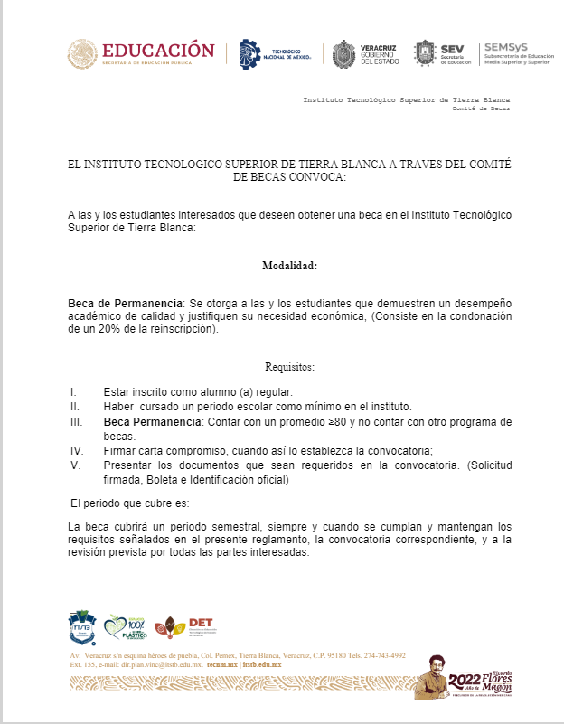
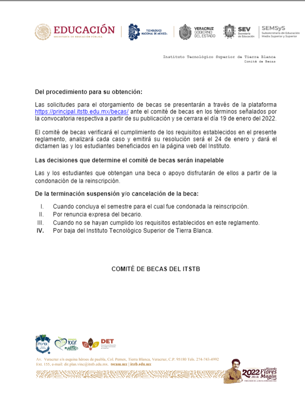

{% extends 'twitter/layout.html' %}

{% block content %}
<!DOCTYPE html>
<html lang="es">
<head>
<meta charset="UTF-8">
<meta name="viewport" content="width=device-width, initial-scale=1">
<link rel="profile" href="http://gmpg.org/xfn/11">
<link rel="pingback" href="https://principal.itstb.edu.mx/xmlrpc.php">
	<link rel="shortcut icon" href="https://principal.itstb.edu.mx/wp-content/uploads/2021/07/Logo-2-s-ITSTB.png" />

<title>Becas &#8211; Instituto Tecnológico Superior de Tierra Blanca</title>
<meta name='robots' content='max-image-preview:large' />
<link rel='dns-prefetch' href='//fonts.googleapis.com' />
<link rel='dns-prefetch' href='//s.w.org' />
<link rel="alternate" type="application/rss+xml" title="Instituto Tecnológico Superior de Tierra Blanca &raquo; Feed" href="https://principal.itstb.edu.mx/feed/" />
<link rel="alternate" type="application/rss+xml" title="Instituto Tecnológico Superior de Tierra Blanca &raquo; Feed de los comentarios" href="https://principal.itstb.edu.mx/comments/feed/" />
<link rel='stylesheet' id='widgetopts-styles-css'  href='https://principal.itstb.edu.mx/wp-content/plugins/widget-options/assets/css/widget-options.css' type='text/css' media='all' />
<link rel='stylesheet' id='alizee-bootstrap-css'  href='https://principal.itstb.edu.mx/wp-content/themes/alizee/bootstrap/css/bootstrap.min.css?ver=1' type='text/css' media='all' />
<link rel='stylesheet' id='alizee-style-css'  href='https://principal.itstb.edu.mx/wp-content/themes/alizee/style.css?ver=5.9.3' type='text/css' media='all' />
<style id='alizee-style-inline-css' type='text/css'>
.main-navigation a, .social-navigation li a, .entry-title a:hover, .widget-title, .widgettitle, .social-widget li a::before, .author-social a, .view-all, .view-all a { color: #842043; }
.main-navigation li:hover, .post-navigation .nav-previous, .post-navigation .nav-next, .paging-navigation .nav-previous, .paging-navigation .nav-next, #today, .tagcloud a, .entry-thumb, .comment-respond input[type="submit"], .cat-link, .search-submit { background-color: #842043; }
.widget-title, .widgettitle, .entry-thumb, .author-name, .site-header, .page-header, blockquote { border-color: #842043; }
.sidebar-toggle { border-right-color: #842043; }
.social-toggle { border-left-color: #842043; }
.site-title a { color: ; }
.site-description { color: ; }
.entry-title, .entry-title a { color: ; }
body { color: ; }
.main-navigation, .main-navigation ul ul { background-color: rgba(60,60,60,0.8); }
.site-header { background-color: #333333; }
.footer-widget-area, .site-info { background-color: #333333; }

</style>

	<div id="content" class="site-content container">
	<div id="primary" class="content-area">
		<main id="main" class="site-main" role="main">

			
				
<article id="post-103" class="post-103 page type-page status-publish hentry">

		

	<header class="entry-header">
		<h1 class="entry-title">Becas</h1>	</header>

	<div class="entry-content">
		
<h3>Programa de becas 2022</h3>


<br>


</div>
<link rel='stylesheet' id='metaslider-flex-slider-css'  href='https://principal.itstb.edu.mx/wp-content/plugins/ml-slider/assets/sliders/flexslider/flexslider.css?ver=3.27.5' type='text/css' media='all' property='stylesheet' />
<link rel='stylesheet' id='metaslider-public-css'  href='https://principal.itstb.edu.mx/wp-content/plugins/ml-slider/assets/metaslider/public.css?ver=3.27.5' type='text/css' media='all' property='stylesheet' />
</body>

{% endblock content %}
</html>